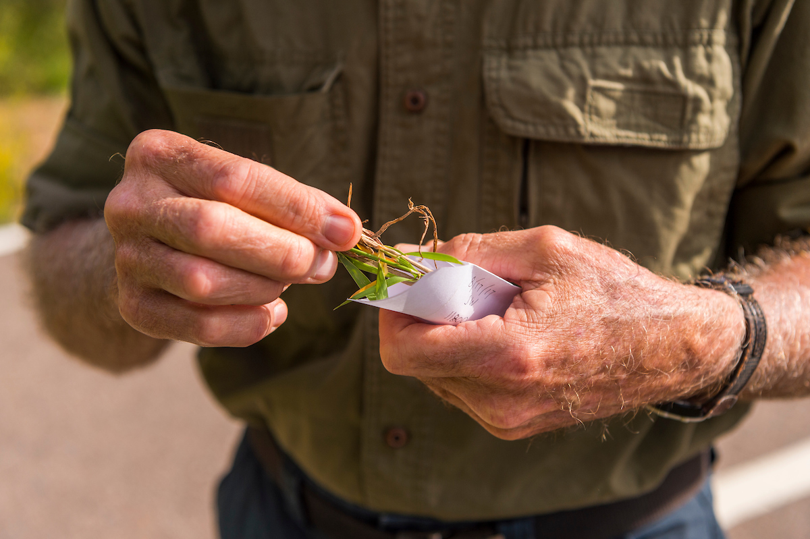

Specimen Collection Protocol Additional Info for Cacti Collections
Collecting Tissue
Before collecting tissue samples it is important to familiarize yourself with the preferred methods and data collection. Review the template for Herbarium Specimen and Biological Asset Data Recording spreadsheet to see the types of data that need to be recorded. Ultimately, this template will be used to submit data for upload into the appropriate databases. There is a data template specific to Cultivated Herbarium Specimens and Biological Assets that are collected from gardens or greenhouses at Denver Botanic Gardens. If you are collecting tissue samples for population genetics (multiple samples per species from 1 population) the data submission process differs, so be sure to familiarize yourself with that process. It is likely (preferred and often required)) that you will collect herbarium vouchers along with your tissue samples. Review the Collecting Vascular Plant Specimens page.
KHD Specimen and Data with Tissue Summary Workflow Illustrated Collection Protocol: Team of 2 Illustrated Collection Protocol: Team of 3 Illustrated Collection Protocol: Team of 4